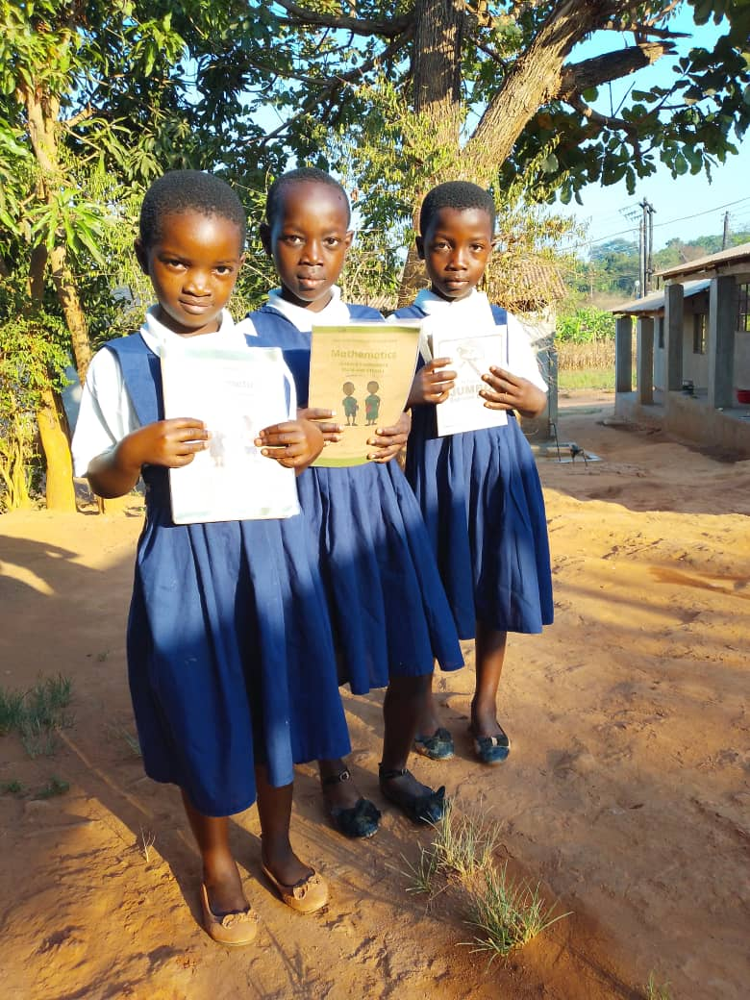

Building Futures in Malawi.
We support people and communities through education, skills, enterprise, green livelihoods, mentorship and opportunities to participate, lead and thrive.

Practical pathways to opportunity
Our programs are designed around the realities, strengths and aspirations of the people we serve.
Education & Second-Chance Opportunities
Helping children, youth and adults access learning, re-entry and second-chance opportunities.
Vocational Skills & Entrepreneurship
Building practical skills, enterprise confidence and pathways to income.
Economic Empowerment
Supporting household resilience through revolving support and livelihood initiatives.
People are at the centre of our work.
this section is for verified BFF impact figures once monitoring data is ready.
From support to lasting opportunity
We work with communities rather than simply for communities. Beneficiaries, volunteers, partners and local leaders can share ideas, stories and solutions.
Meet the people we serveOur commitment
Because someone believed in us, we now believe in others.
Replace this statement with your approved organizational vision, mission or values as required.